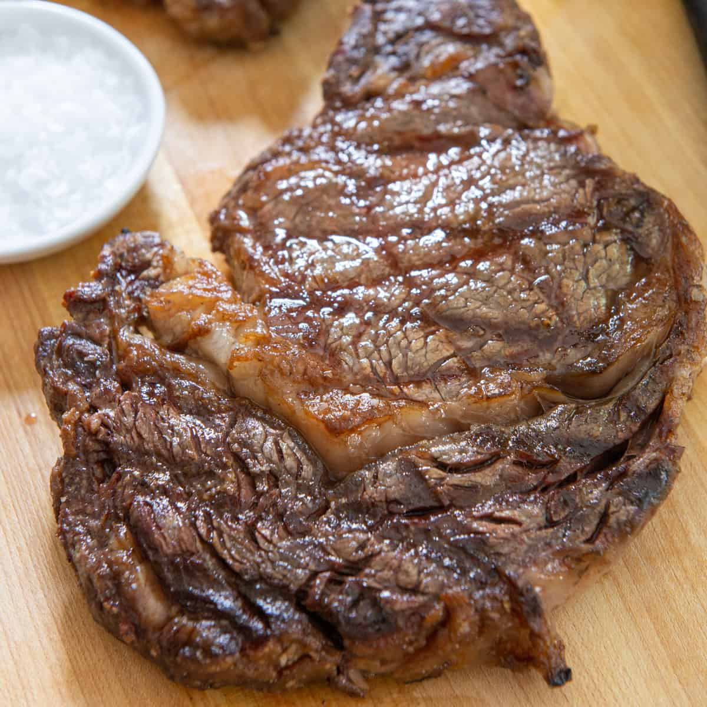

Grilled Ribeye Steak

Description
Ribeye steaks are usually cut from beef ribs nine through 11 in the rib section of a cow. This cut of beef contains several different muscles, the largest of which are the longissimus dorsi (aka eye), a tender muscle also found in the strip steak, and the fattier spinalis dorsi (aka deckle or rib cap), which sits on top of the longissimus dorsi. Like prime rib and filet mignon, it's one of the more expensive cuts out there, so you want to cook it right.
Ingredients
- 1 ribeye steak, about 1–2 inches thick
- Kosher salt, to taste
- Freshly ground black pepper, to taste
- 1 tablespoon unsalted butter
- 1 tablespoon olive oil (not extra virgin) or other neutral vegetable oil
Steps
- Pat the steak dry with paper towels. Season both sides with salt and let stand at room temperature, 30 minutes to 1 hour, or refrigerate up to 72 hours. If refrigerating, bring steak back to room temperature before cooking, by resting for 1 hour. Pat dry with paper towels and season with more salt and pepper. Press pepper into the steak to adhere.
- In a large skillet, melt the butter with the oil over medium-high heat. When the butter foam subsides, add the steak. Sear until a brown crust forms, about 2 minutes per side. Use strong tongs to press the edge of the steak into the pan, rolling and cooking edges until the fat is rendered. Return steak to pan flat-side down, reduce heat to medium, and cook until desired degree of doneness, about 2–2½ minutes for medium rare. For medium rare, the internal temperature should be 125°-130°F, internal color should be opaque, lighter red, and texture should be just resilient to the touch, droplets of red juice should rise to the surface of the steak.
- Remove the steak from pan and transfer to a cutting board or plate, tent with foil, and rest, 5–20 minutes. This is a good time to make a simple pan sauce, if desired. Internal temperature will increase about 5°F during resting.